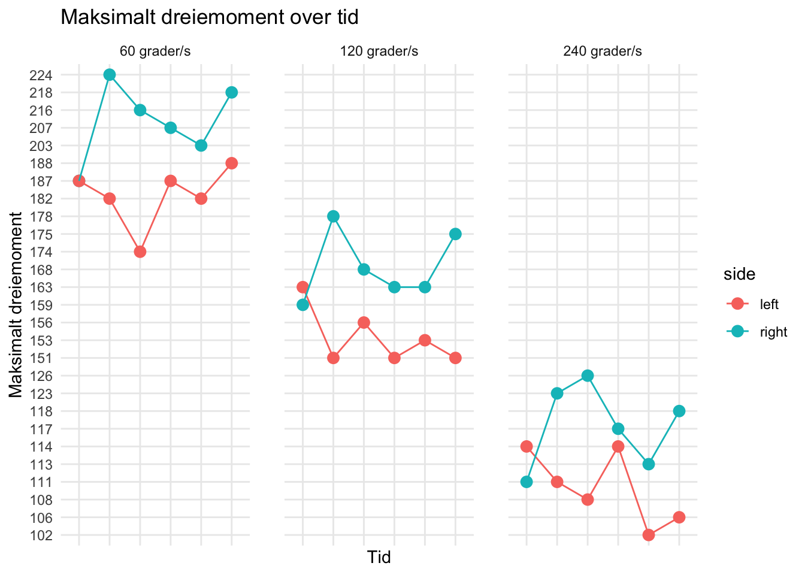

# Funksjon for å hente data fra én HUMAC-fil
extract_humac_data <- function(file_path) {
# Hent dato fra filnavnet
filename <- basename(file_path)
date_match <- str_extract(filename, "\\d{8}")
test_date <- as.Date(date_match, format = "%d%m%Y")
raw_data <- read_excel(file_path, col_names = FALSE)
# Funksjon for å hente én hastighets-seksjon
extract_speed_section <- function(start_row, speed) {
# Peak Torque (rad 11-12 fra start)
peak_torque <- tibble(
test_date = test_date,
speed = speed,
parameter = "peak_torque",
side = c("right", "left"),
exercise = c("extension", "extension"),
Newtonmetres = c(
raw_data[[start_row + 11, 5]], # Høyre
raw_data[[start_row + 12, 5]] # Venstre
)
)
return(peak_torque)
}
# Hent alle tre hastighets-seksjoner
speed_60 <- extract_speed_section(1, 60)
speed_120 <- extract_speed_section(48, 120)
speed_240 <- extract_speed_section(95, 240)
bind_rows(speed_60, speed_120, speed_240)
}
# Finn alle HUMAC-filer (ekskluderer første tilvenning fra 16/09)
humac_files <- list.files("Data/", pattern = "HUMAC.*\\.xlsx", full.names = TRUE) %>%
str_subset("16092025", negate = TRUE)
humac_data <- map_df(humac_files, possibly(extract_humac_data, otherwise = NULL))
# Konverter dato til test-tidspunkter
humac_data <- humac_data %>%
mutate(
time_point = case_when(
test_date == as.Date("2025-09-18") ~ "Pre-test",
test_date == as.Date("2025-09-23") ~ "Test 1",
test_date == as.Date("2025-09-25") ~ "Test 2",
test_date == as.Date("2025-09-30") ~ "Test 3",
test_date == as.Date("2025-10-02") ~ "Test 4",
test_date == as.Date("2025-10-07") ~ "Test 5",
test_date == as.Date("2025-10-09") ~ "Test 6",
TRUE ~ as.character(test_date)
),
# Gjør om til kronologisk rekkefølge
time_point = factor(time_point, levels = c("Pre-test", "Test 1", "Test 2", "Test 3", "Test 4", "Test 5", "Test 6"))
) %>%
select(-test_date) %>%
rename(time = time_point) %>%
select(time, everything())
# Tidy datasettet ble lagret som CSV-fil for enkel tilgang til analyse
write_csv(humac_data, "Data/humac_tidy_data.csv") Effekten av styrketrening på isokinetisk kneekstensjon: En 3-ukers case-studie
Introduksjon
Sprintsyklister er kjennetegnet ved evnen til å kunne produsere høy kraft og akselerasjon over korte distanser på 5 - 10 000 meter, og en avgjørende faktor for prestasjon vil være maksimalkraften i kneekstensjon (kilde). Styrketrening i form av progressiv motstandstrening er en effektiv metode for å øke muskelstyrke, og benyttes ofte i “off-season” perioder av sprintsyklister. Vi ønsker å undersøke effekten av en treningsintervensjon på underekstremitetene på maksimalt dreiemoment i kneekstensorene. Gullstandarden for måling av muskelstyrke er med et isokinetisk dynamometer (kilde), og vi har dermed valgt HUMAC-cybex maskinen (modell her) som måleinstrument. Hypotesen vår er at detalkeren vil ha økt maksimalt dreiemoment i kneekstensjon etter intervensjonen, sammenlignet med pre-test.
Metode
Deltaker
Deltakeren er en 24 år gammel mann …
Datainnsamling
Deltakeren gjennomførte to tilvenningsøkter (16.09 og 18.09) for å redusere innflytelse av læringseffekten på resultatene (Hopkins, 2000).
Deltakeren utførte to tester i uken i en periode på tre uker, og vi endte opp med seks tester totalt. Testtidspunktene ble standardisert til tirsdag og torsdag hver uke, og ble utført på samme tidspunkt på døgnet. Deltakerens koffein- og matinntak ble også standardisert. Deltakeren utførte treningsprotokollen cirka én time etter hver test, og vi forsikret dermed 48 timers restitusjon mellom hver test.
Oppvarmingsprotokoll …
Testprotokollen …
Utstyr og innstillinger …
Forklaring av test + evt. verbale instrukser under testen …
Intervensjon
Databehandling
Høyeste maksimale dreiemoment (Nm) fra hver hastighet per test ble tatt med videre til analyse i datasettet vårt.
All analyse ble utført i R (versjon 4.5.1). Data visualisering ble utført ved hjelp av tidyverse- og readxl-pakken i Rstudio. Rådata fra HUMAC testene ble innhentent fra syv* av Excel-filene, og importert og prosessert til et “tidy” datasett ved hjelp av R-kode. Koden for prosesseringen er inkludert i Quarto-dokumentet og tilgjengelig på GitHub.
*Tilvenning fra 16.09.25 ble eksludert fra tidy-datasettet. Grunnen til dette er fordi det ble brukt en annen protokoll enn de syv andre testene, og var dermed ikke sammenlignbart med de andre testene. Pre-test i datasettet er dermed fra 18.09.25.
Resultater
Tabell 1: Deltakerens resultater
| Tidspunkt | Side | Maksimalt Nm 60°/s | Maksimalt Nm 120°/s | Maksimalt Nm 180°/s |
|---|---|---|---|---|
| Pre-test | Høyre | 174 | 159 | 117 |
| Pre-test | Venstre | 178 | 164 | 121 |
| Test 1 | Høyre | 187 | 159 | 111 |
| Test 1 | Venstre | 187 | 163 | 114 |
| Test 2 | Høyre | 224 | 178 | 123 |
| Test 2 | Venstre | 182 | 151 | 111 |
| Test 3 | Høyre | 216 | 168 | 126 |
| Test 3 | Venstre | 174 | 156 | 108 |
| Test 4 | Høyre | 207 | 163 | 117 |
| Test 4 | Venstre | 187 | 151 | 114 |
| Test 5 | Høyre | 203 | 163 | 113 |
| Test 5 | Venstre | 182 | 153 | 102 |
| Test 6 | Høyre | 218 | 175 | 118 |
| Test 6 | Venstre | 188 | 151 | 106 |
Figur 1: Linjediagram av resultatene fra Tabell 1

Tabell 2:
Diskusjon
Reliablitet og validitet
Metodiske styrker og begrensninger
Valget for innhenting av data med R-kode istedet for å plotte inn dataene manuelt, er for å styrke graden av reproduserbarhet til rapporten vår.
Vi har forsøkt å redusere effekten av konfunderende variabler ved å standardisere så mye av testprosessen som mulig.
Referanseliste
Hopkins WG. Measures of reliability in sports medicine and science. Sports Med. 2000 Jul;30(1):1-15. doi: 10.2165/00007256-200030010-00001. PMID: 10907753.